04 / Football Victoria.
The NIKE FC Cup is Football Victoria's flagship cup competition for elite women's football, run in collaboration with NIKE. As Senior Graphic Designer I helped develop and roll out the brand across the whole event: social content, digital and print signage, and AV at the Home of the Matildas.
Brand · Print · Environment · AV · Digital
04 / The brand
NIKE × Football Victoria
A bold, electric identity built around the NIKE and Football Victoria lockup. One gradient system ran through every touchpoint, so the Cup read as one event from the stadium gates to the final whistle.
Cup Final night at the Home of the Matildas. Print signage carried the brand end to end, from the stadium entry and the players' tunnel to the presentation wall, so the venue felt like the Cup the moment fans walked in.
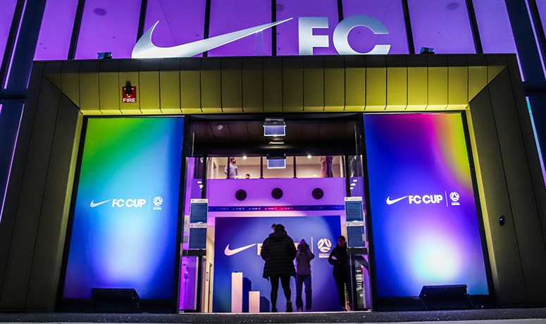
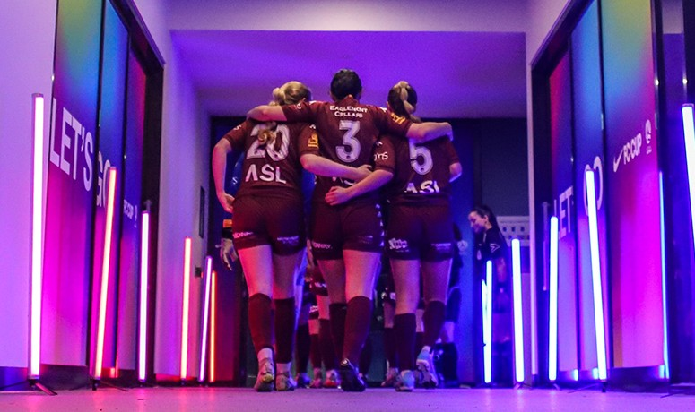
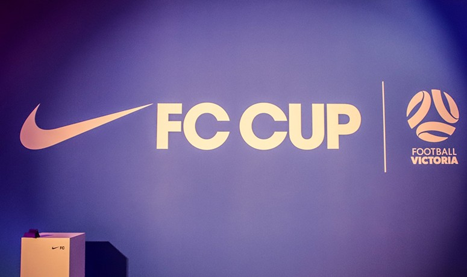
AV content for the scoreboard and the LED perimeter boards kept the identity live for the full ninety minutes.
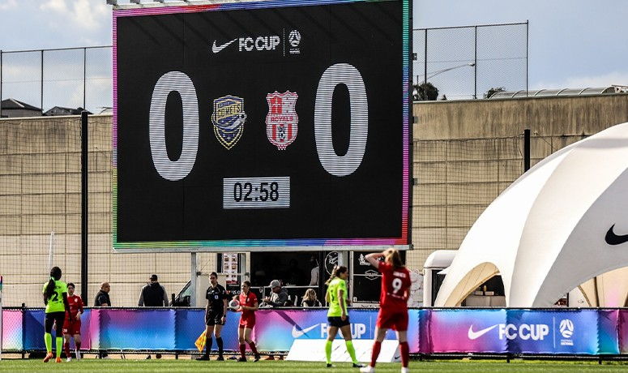
Medals and the champions' banner closed out the night. The Cup was a great showcase of what women's football can achieve, and I'm proud of what we brought together.
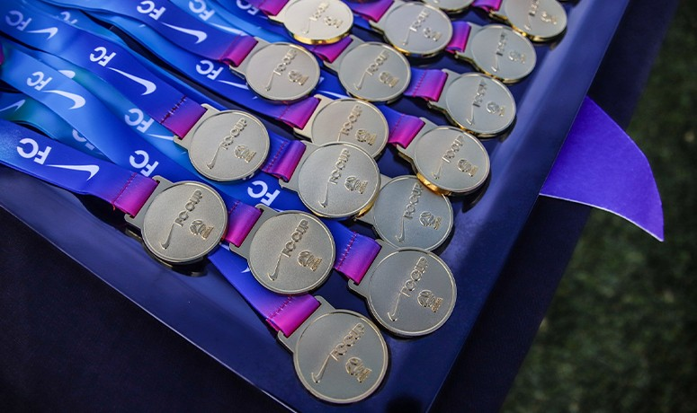
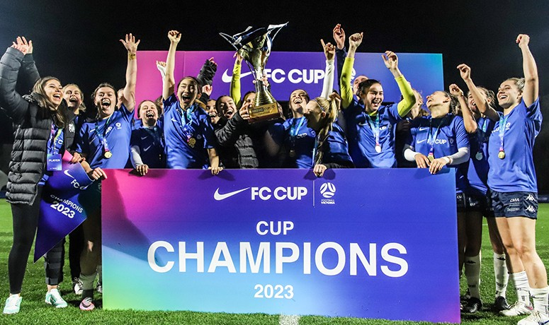
Digital content for Football Victoria's socials, from Game Day and starting line-ups to live scores and the final-whistle Champions graphic, all built from the same kit as the venue.
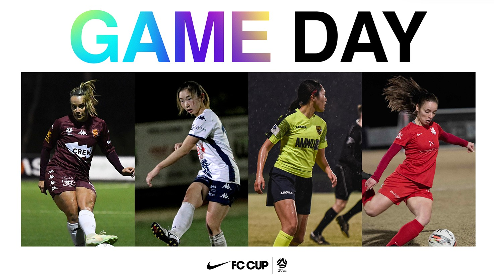
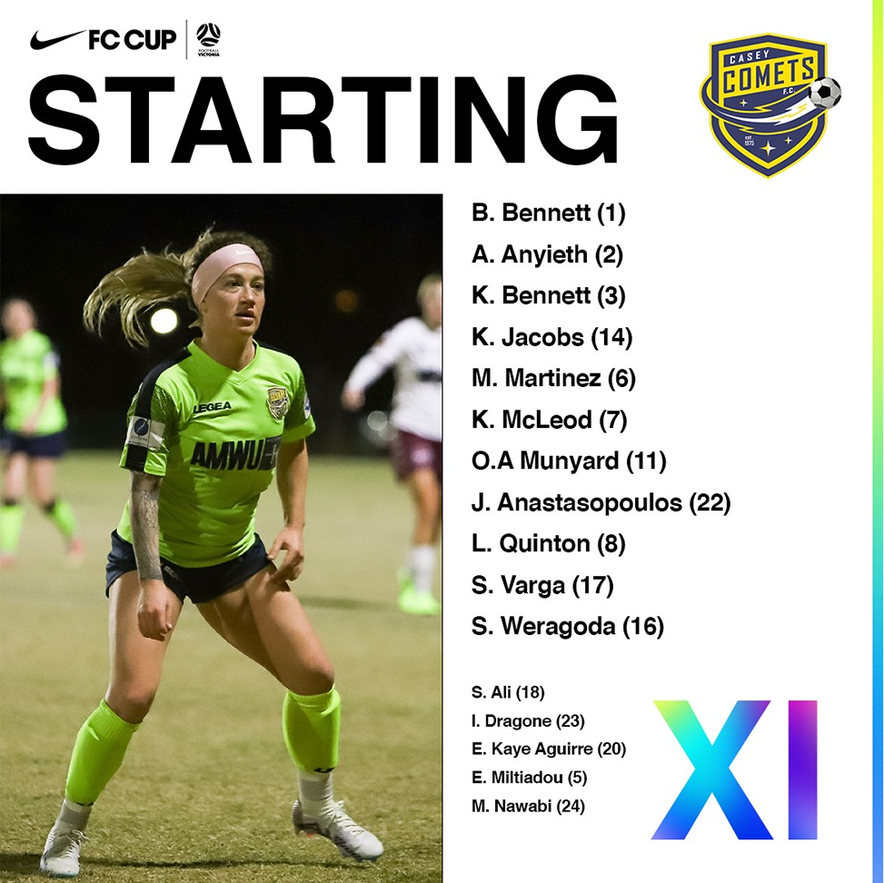
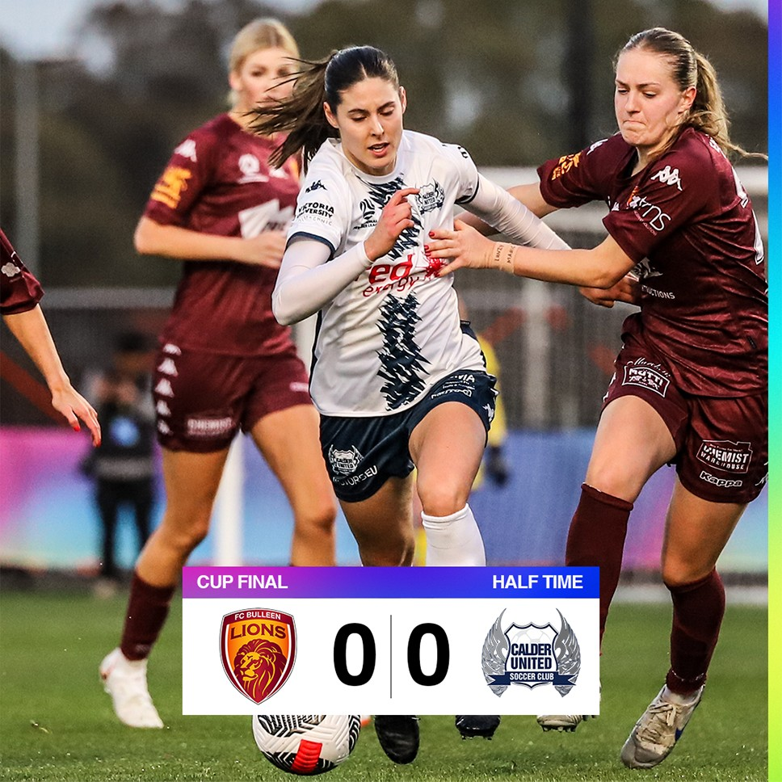
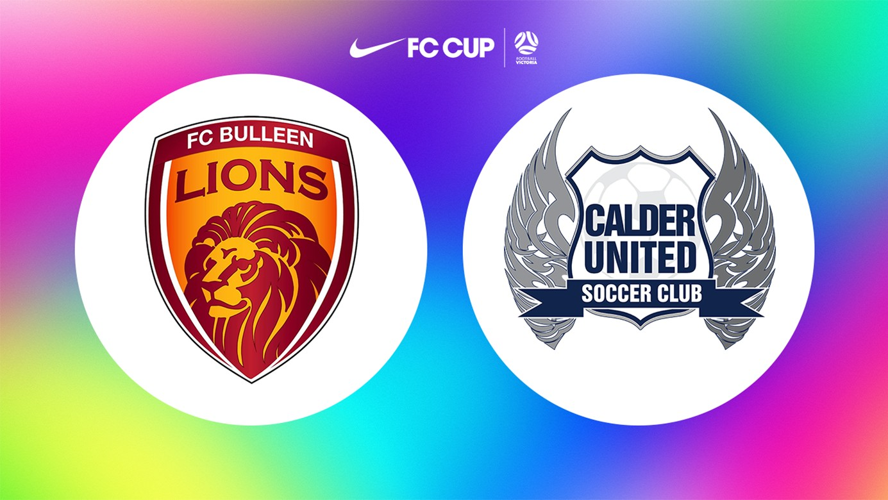
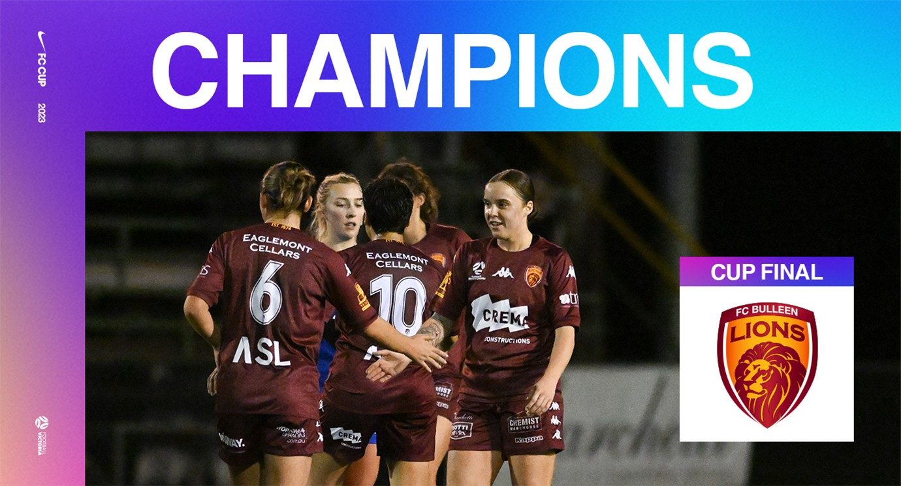